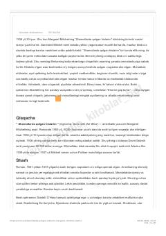

SQAQSh fuqarolar urushi davrida Skarlett O'Haraning hayotiy kurashlari va muhabbat qissasi.
Margaret Mitchellning ushbu mashhur romani AQSh fuqarolar urushi davrida yuz bergan voqealarni tasvirlaydi. Asar bosh qahramoni Skarlett O'Haraning qiyinchiliklarga qarshi kurashi, muhabbat va hayotiy sinovlar orqali o'zligini topishi hikoya qilinadi. Kitob inson irodasi va umidning naqadar kuchli ekanligini ko'rsatib beradi.